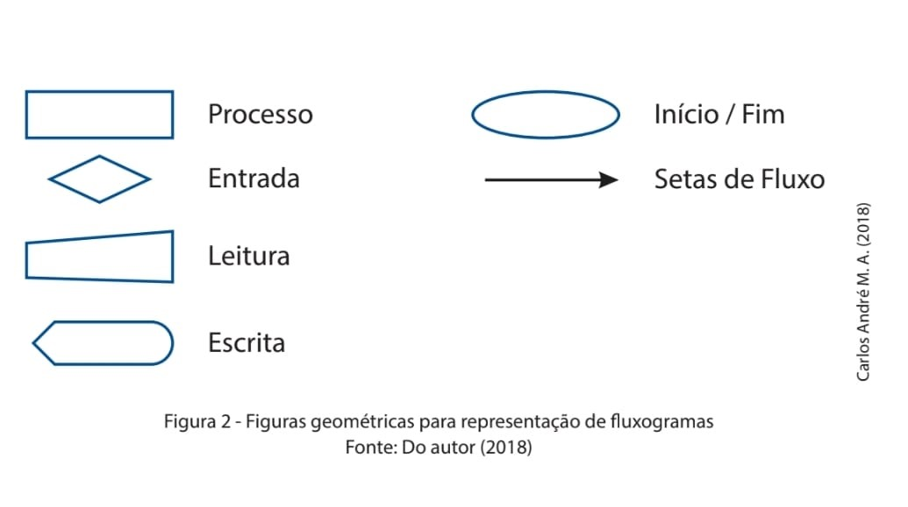

O fluxograma, também conhecido como fluxograma de processo, mapa de processos e/ou fluxogramas funcionais, entre outros, é um diagrama que caracteriza os diversos processos de um projeto, seja ele um programa ou um algoritmo. O fluxograma é um dos diagramas mais utilizados do mundo para planejar, idealizar, documentar e estudar os diferentes casos, necessidades e particularidades de cada ocasião. Existem três tipos de fluxogramas, sendo eles o fluxograma de processos (PFD), fluxograma de documentos (VSW) e o fluxograma de dados (DFDs). RepresentaçãoO fluxograma, também conhecido como fluxograma de processo, mapa de processos e/ou fluxogramas funcionais, entre outros, é um diagrama que caracteriza os diversos processos de um projeto, seja ele um programa ou um algoritmo. O fluxograma é um dos diagramas mais utilizados do mundo para planejar, idealizar, documentar e estudar os diferentes casos, necessidades e particularidades de cada ocasião. Existem três tipos de fluxogramas, sendo eles o fluxograma de processos (PFD), fluxograma de documentos (VSW) e o fluxograma de dados (DFDs).
As diversas etapas do fluxograma são representadas por figuras geométricas padronizadas que indicam a fase onde essas etapas estão inseridas.
